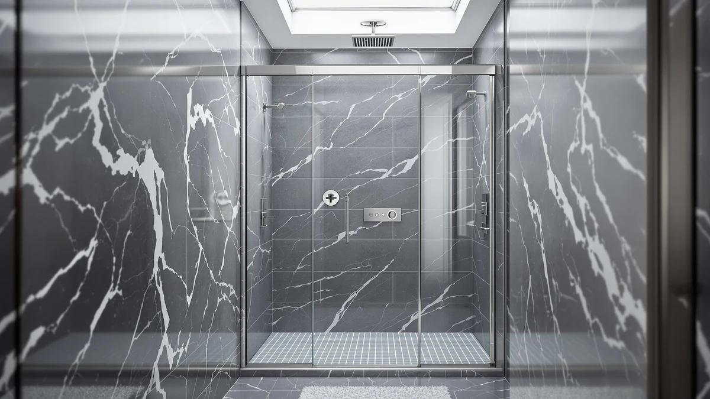

Quick Answer
The Delavin 60" W x 72" frameless pivot door is a solid pick if your rough opening measures between 59.9 and 60.3 inches, since it does not adjust outside that range. It uses a magnetic seal and aluminum wall profile that the cheaper sliding doors in this comparison skip, which is most of why it costs $444.99 instead of $299.99 to $319.89.
Our pick: DELAVIN 60" W x 72", $444.99 Check Price on Amazon
Things to Know Before You Buy
- The Delavin 60" W x 72" only fits openings between 59.9 and 60.3 inches wide. There is no adjustable trim range like on the Narolabo or Botwinkle doors below.
- It is a hinged pivot door, not a slider, so you need clearance for the door to swing open rather than floor space to the side.
- A full-length magnetic seal and separate water strips are built in, a feature the three cheaper doors in this comparison do not include.
- At $444.99, it costs $125 to $145 more than the three alternatives we researched, all of which use sliding or adjustable-width designs instead.
- None of the four doors in this review carry published owner ratings on Amazon yet, since all four are recent listings.
This Delavin 60" W x Review covers the one detail that matters most before you spend $444.99: the door only fits a rough opening between 59.9 and 60.3 inches wide, a tighter tolerance than most 60-inch doors on the market allow.
We researched the Delavin against three other doors sized for comparable bathrooms: the EASYWORC 36"-38" W x 72" pivot door, the Botwinkle 44-48" W x 72" semi-frameless slider, and the Narolabo 56-60" W x 72" frameless slider. Pricing across the four ranges from $299.99 to $444.99, and width coverage differs across the four doors too. The EASYWORC tops out at 38 inches, the Botwinkle adjusts up to 48 inches, and only the Delavin and Narolabo reach a full 60 inches wide. Where the Narolabo gives you a 4-inch trim range to hit that width, the Delavin does not adjust at all, so the measurement you take at home decides whether it works before you ever check a price or a spec sheet.
Why You Should Trust Us
Ilane Tall covers bathroom hardware and fixtures for Best Shower Doors, and this review follows the same process we use for every pivot and sliding door on the site: pull the manufacturer's published dimensions and materials, confirm current pricing and stock directly from the Amazon listing, and line up those numbers against every comparable door in the same size bracket. We do not run a testing lab, and we have not installed this door in a bathroom. What we can offer is a careful read of the spec sheet and an honest account of what it does and does not tell you. Where a listing has no owner ratings yet, which is true of all four doors covered in this Delavin 60" W x Review, we say so plainly instead of inventing feedback that does not exist.
Our Research Experience
We did not install or live with the Delavin 60" W x 72" door, and we are not going to pretend otherwise. Our process for this review was to compare the manufacturer's published dimensions, materials and seal design against the three other pivot and sliding doors in this comparison, then verify current Amazon pricing and stock status for each. Every spec cited here, the 59.9 to 60.3 inch fit window, the aluminum wall profile, the stainless steel hardware, and the 0.4 inch of adjustable glass depth, comes directly from Delavin's own product listing rather than a guess.
We also checked whether any of the four doors had accumulated owner reviews on Amazon. None had, so we have not cited star ratings or reviewer quotes anywhere in this piece. A door with zero reviews is not automatically a bad door, since all four are relatively new listings, but it does mean you are relying on the spec sheet rather than other buyers' experience, and we wanted that tradeoff stated clearly rather than glossed over.
Overview & Specs

DELAVIN 60" W x 72"
What we like
- Full-length magnetic seal plus separate side and bottom strips to keep water in the shower
- Aluminum wall profile with stainless steel handle and hardware
- 0.4 inch of adjustable glass depth at the wall profile for walls that are not perfectly plumb
Flaws but not dealbreakers
- Fits only a 59.9 to 60.3 inch opening, with no size range beyond that
- At $444.99 it costs significantly more than sliding doors of a similar size
- No published owner ratings yet to confirm long-term durability
| Material | Tempered glass, aluminum and stainless steel |
| Size | 60" W x 72" H |
The Delavin 60" W x 72" is a frameless, hinged pivot door built for a fixed 60-inch-wide opening. Delavin specifies a 59.9 to 60.3 inch tolerance, tighter than the 4-inch adjustment range on the Narolabo slider covered below, so measure your rough opening in three spots, top, middle and bottom, before ordering. The frame pairs an aluminum wall profile with a stainless steel handle, and Delavin builds in 0.4 inches of adjustable glass depth at the wall profile to compensate for walls that are not perfectly plumb, a common issue in older houses.
This Delavin 60" W x Review turns up its biggest difference from the cheaper doors in the seal. A full-length magnetic strip runs the length of the door, backed by separate side and bottom water seals, a combination none of the three sliding alternatives include. That hardware, plus the pivot-hinge mechanism itself, accounts for most of the gap between the $444.99 price here and the $299.99 to $319.89 range of the other three doors. If your bathroom layout has the floor space for a door that swings open rather than slides, that premium buys you a tighter seal at the hinge than a sliding panel typically achieves.
What We Liked
The build quality stands out most. Delavin pairs an aluminum wall profile with stainless steel hardware, and the magnetic seal combined with separate side and bottom strips addresses a common complaint on budget pivot doors: water working its way out past the hinge side over time. The 0.4 inch of adjustable glass depth is also a detail the cheaper doors in this comparison skip entirely, and it matters in homes where the wall and floor are not perfectly square.
We also like that Delavin publishes an exact fit range instead of a vague "approximately 60 inches" claim some listings use. A 59.9 to 60.3 inch window is strict, but it tells you precisely whether this door will work before you spend $444.99 on it, rather than leaving you to find out after installation starts.
The pivot-hinge design itself is worth noting too. Unlike the Botwinkle and Narolabo sliders, which need clear wall space to the side of the opening for the panel to travel, a hinged door only needs room to swing, which can matter in a tight layout where a slider's track would run into a toilet or vanity.
What Could Be Better
The fit tolerance that makes the spec sheet honest also makes the door inflexible. Anything outside 59.9 to 60.3 inches rules this door out entirely, while the Narolabo gives you a 4-inch trim range for $145 less. If your opening is not within half an inch of exactly 60 inches, the Delavin is not an option, and no version of this product adjusts further.
Price is the second factor. At $444.99, the Delavin costs 39 percent more than the Narolabo and more than 40 percent more than the Botwinkle, and the Amazon listing does not yet carry a single owner rating, so there is no review history to weigh against that premium. Buyers who want social proof before spending this much will not find it here yet.
A hinged door also needs swing clearance that a slider does not. If your bathroom layout puts a toilet, vanity or tight wall close to the opening, confirm you have room for the door to swing fully open before choosing a pivot design over a slider.
Who Is It For?
This door suits a homeowner who has already measured a rough opening between 59.9 and 60.3 inches and wants a hinged pivot door rather than a slider, typically because a pivot door seals tighter at the hinge and does not need floor space to the side when fully open. It also suits buyers willing to pay a premium for stainless steel hardware and a magnetic seal rather than the lighter hardware on cheaper sliders.
It is not the right pick if your opening falls outside that half-inch window, if your bathroom layout does not have room for a door to swing open, if you would rather save $125 to $145 with the Botwinkle or Narolabo, or if you want to see owner feedback before buying, since this listing has none yet.
Alternatives to Consider
Before you commit to the pick in this Delavin 60" W x Review, here are three doors we researched in the same general size bracket. Each uses a different design or fits a narrower opening, so compare the dimensions below against your own measurements rather than assuming any of them are interchangeable.

Editor’s Pick
EASYWORC 36"-38" W x 72"
A frameless pivot door built for compact 36 to 38 inch openings, with 6 millimeter nano-coated glass and CPSC, ANSI and SGCC safety certification, a good fit for smaller bathrooms the Delavin's 60-inch frame will not fit.
$319.89
Check Price on Amazon
Best Value
Botwinkle 44-48"x72" Semi-Frameless Double Sliding
A semi-frameless double slider with a 44 to 48 inch adjustable width, matte black 304 stainless steel hardware, and the lowest price of the four doors in this comparison at $309.99.
$309.99
Check Price on Amazon
Premium Choice
Frameless Sliding Glass Shower Door
A frameless slider with a trimmable top rail covering 56 to 60 inches, the widest adjustment range here, priced $145 below the Delavin at $299.99.
$299.99
Check Price on AmazonFrequently Asked Questions
What size opening does the Delavin 60-inch pivot shower door fit?
Delavin specifies a 59.9 to 60.3 inch rough opening width with no adjustment range. Measure at the top, middle and bottom of your opening before ordering, since this door will not fit outside that half-inch window.
Is the Delavin 60-inch pivot door worth $444.99?
It depends on what you value. You are paying for a magnetic seal, aluminum wall profile and stainless steel hardware that the cheaper sliding doors in this comparison do not include. If you want to save $125 to $145, the Botwinkle or Narolabo are worth comparing first.
How does the Delavin compare to sliding shower doors in the same size range?
The Narolabo 56-60 inch slider is the closest alternative at $299.99, with a 4-inch adjustable trim range the Delavin does not have. The Delavin is a hinged pivot door instead of a slider, which seals tighter at the hinge but needs clearance to swing open.
Final Verdict
The bottom line on this Delavin 60" W x Review: the DELAVIN 60" W x 72" is worth $444.99 if your rough opening measures between 59.9 and 60.3 inches, your layout has room for a door that swings rather than slides, and you want a magnetic seal plus stainless steel hardware. If your opening falls outside that narrow window, if floor space is tight, or if you would rather save $125 to $145, the Narolabo 56-60" W x 72" or the Botwinkle 44-48" W x 72" are the better starting points among the alternatives we researched.